1. Литейная: две задачи одновременно
Литейная — это полноценное PvP за объекты, но поверх него работает отдельная экономика очков. Сильная игра строится не вокруг выбора «команда или личка», а вокруг правильного распределения маршей между боем, гарнизонами и сбором.
🏆 Победа команды
Склад, Котельная, Транзит и Наёмники могут давать мало личного пассива, но их бонусы меняют темп всего матча. Критический служебный объект иногда важнее Литейной с её 900 личных очков/мин.
⭐ Личные очки
Для пассивного набора приоритет другой: Королевская литейная → Прототипы → Ремонтники → служебные объекты. Свободный марш без задачи — почти всегда потерянные очки.
2. До входа: АТК, ЗАЩ и готовность города
⚔️ АТК — забрать объект

Задача атакующей формации — быстро продавить объект. После успешного захвата её не оставляем как постоянную защиту.
🛡️ ЗАЩ — удержать объект
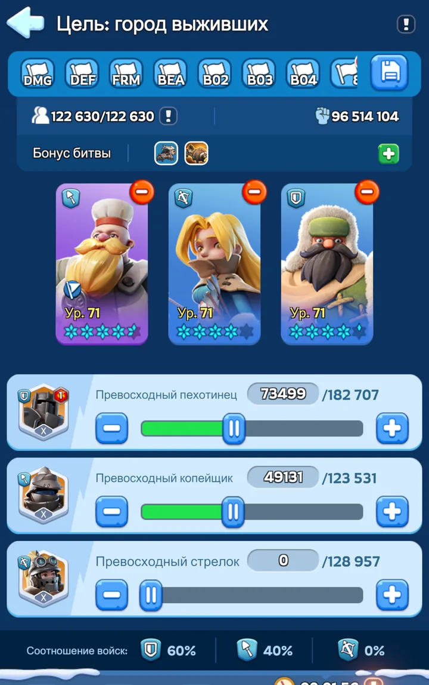
Для удержания объекта используем защитный первый навык и более плотный фронт.
3. Карта ценности объектов
Стационарные объекты дают разовые очки за захват и постоянные очки за удержание. Личный пассив равен половине командного, но личная доходность и командная ценность — не одно и то же.
личных очков/мин
личных очков/мин
личных очков/мин
личных очков/мин
Точные очки захвата и удержания
| Объект | Команда / захват | Команда / удерж. | Личные / захват | Личные / удерж. |
|---|---|---|---|---|
| Королевская литейная | 9 000 | 1 800/мин | 4 500 | 900/мин |
| Прототипный объект ×2 | 6 000 | 1 200/мин | 3 000 | 600/мин |
| Ремонтный комплекс ×4 | 3 000 | 600/мин | 1 500 | 300/мин |
| Склад вооружения | 1 200 | 240/мин | 600 | 120/мин |
| Лагерь наёмников | 1 200 | 240/мин | 600 | 120/мин |
| Котельная | 1 200 | 240/мин | 600 | 120/мин |
| Транзитная станция | 1 200 | 240/мин | 600 | 120/мин |
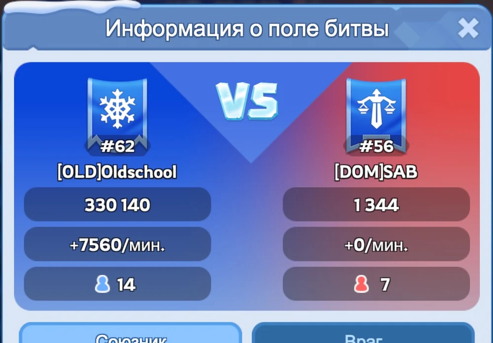
4. AFK-фарм и распределение 6 маршей
Если активный бой прямо сейчас не требует всех ваших маршей, пассивный доход можно считать почти как экономику производства.
2 Прототипа + 4 Ремонтных комплекса. Хорошая пассивная схема, если Литейная ещё закрыта или центр постоянно отбивают.
Литейная + 2 Прототипа + 3 Ремонтника. Теоретический максимум для шести гарнизонных маршей по лучшим личным пассивам.
- Это идеальные цифры при непрерывном контроле. Реальный доход ниже из-за переходов, выбивания гарнизонов и смены владельца.
- Безопасный Прототип или Ремонтник может дать больше фактических очков, чем центральная Литейная, которую вас постоянно заставляют покидать.
- Слабый игрок полезен, если занимает свободное место в хорошем гарнизоне и освобождает сильные марши союзников для активного боя.
5. Главные объекты, приносящие очки
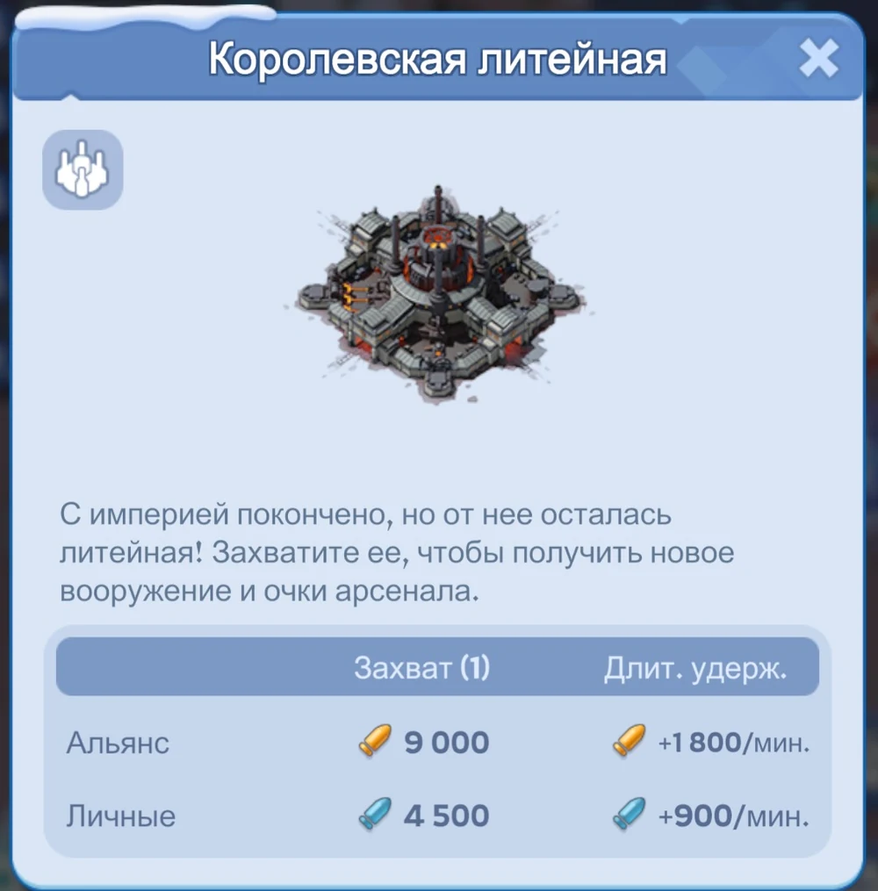
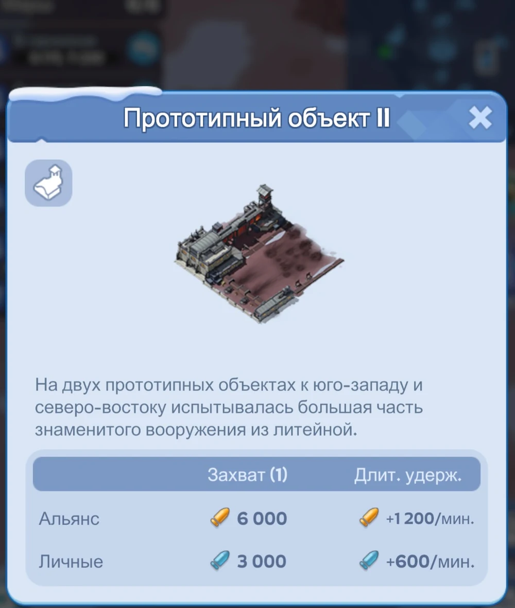
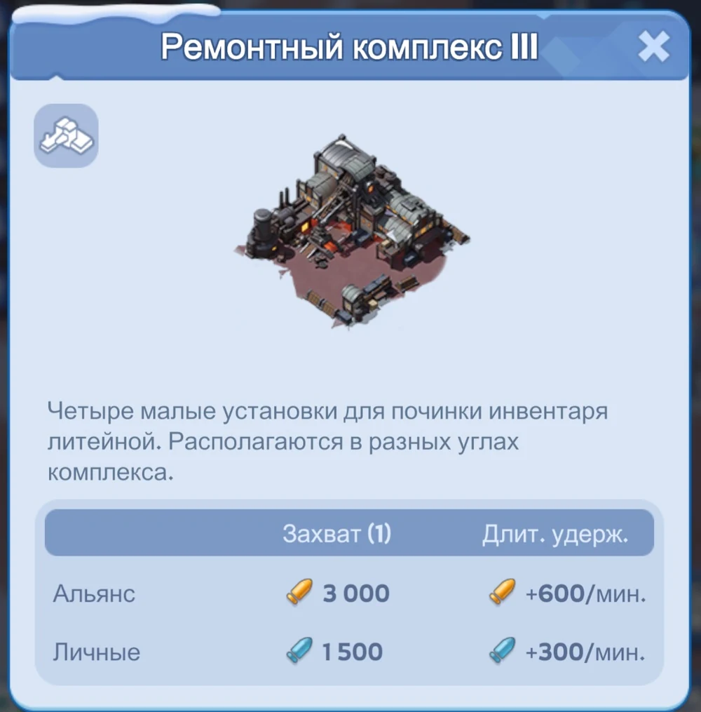
⭐ Если нужна личка
- Литейная → Прототипы → Ремонтники.
- Стабильный аптайм важнее красивой цифры объекта.
- Свободные места в гарнизонах — бесплатные очки.
🏆 Если нужна победа
- Смотрим не только на пассив.
- Служебный бонус может решить следующий захват.
- Не бросаем Склад или Транзит ради +300 личных/мин.
6. Служебные объекты: мало очков, много пользы
Все четыре дают лишь 120 личных очков/мин. Их смысл — создать преимущество для всей команды.
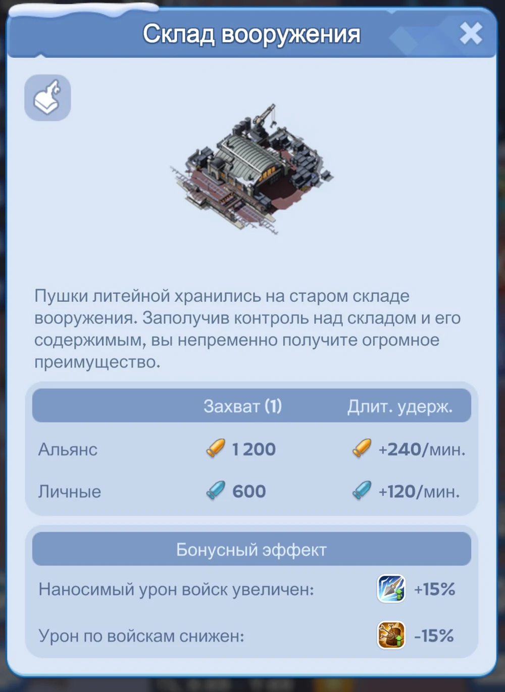
Склад вооружения
+15% урона · −15% входящего уронаПрямой боевой бонус. В плотном матче может быть важнее любого объекта, приносящего очки.
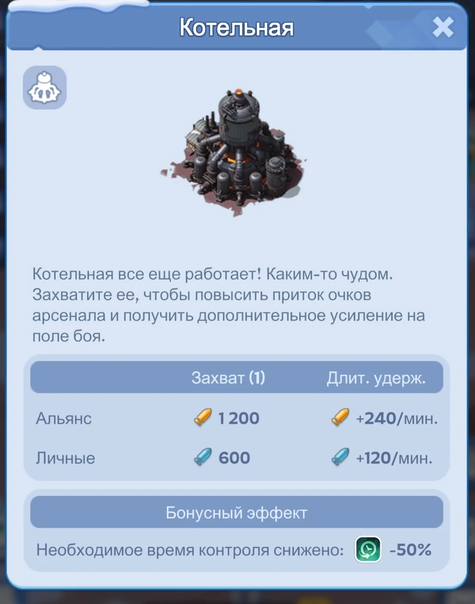
Котельная
Время контроля объекта −50%Ускоряет превращение захвата в полноценное владение. Особенно полезна при частых перехватах.
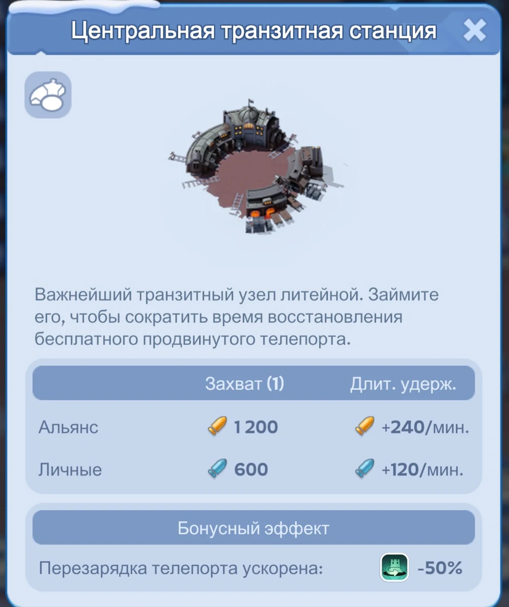
Транзитная станция
Откат бесплатного телепорта −50%Повышает мобильность всей команды: быстрее меняем фланг, подкрепляем объект и выходим из фокуса.
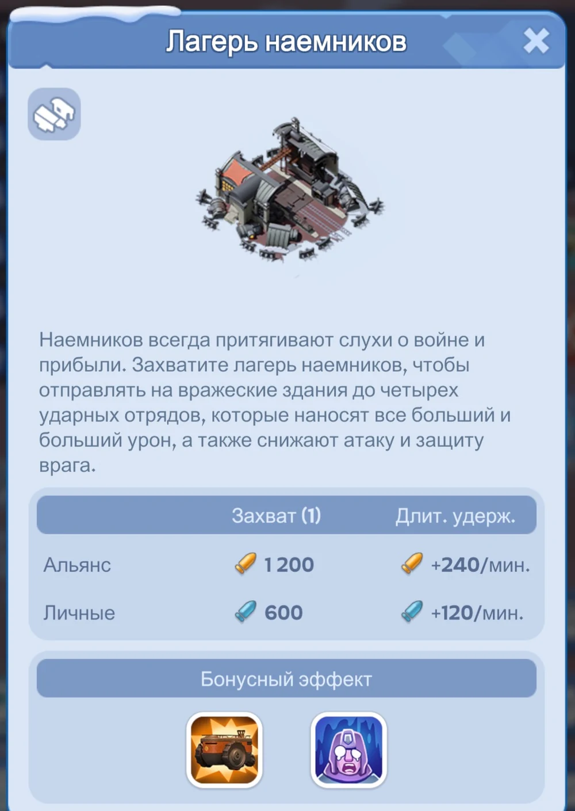
Лагерь наёмников
До 4 ударных отрядов по зданиямИнструмент давления на плотный гарнизон. Нужен не ради 120/мин, а чтобы открыть дорогу к более ценному объекту.
7. Оружейные мастерские: свободный марш тоже должен работать
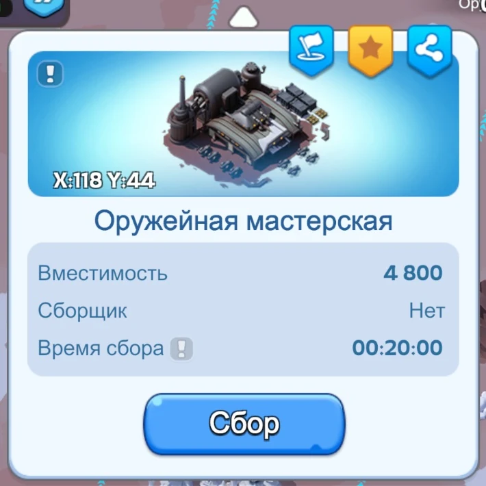
Экономика одной плитки
240/минМастерская хуже хорошего гарнизона, но лучше марша, который просто стоит в городе.
Приоритет: критический гарнизон → выгодный гарнизон на объекте, приносящем очки → мастерская → бездействие.
- Если хорошие стационарные объекты уже заполнены союзниками, отправляем свободные марши собирать мастерские.
- Не снимаем ради плитки марш с критического гарнизона, который приносит больше очков или держит командный бонус.
- Мастерские особенно удобны в паузах между боями и для игроков, которые не могут постоянно микроконтролить карту.
8. Наёмники: размягчить гарнизон перед атакой
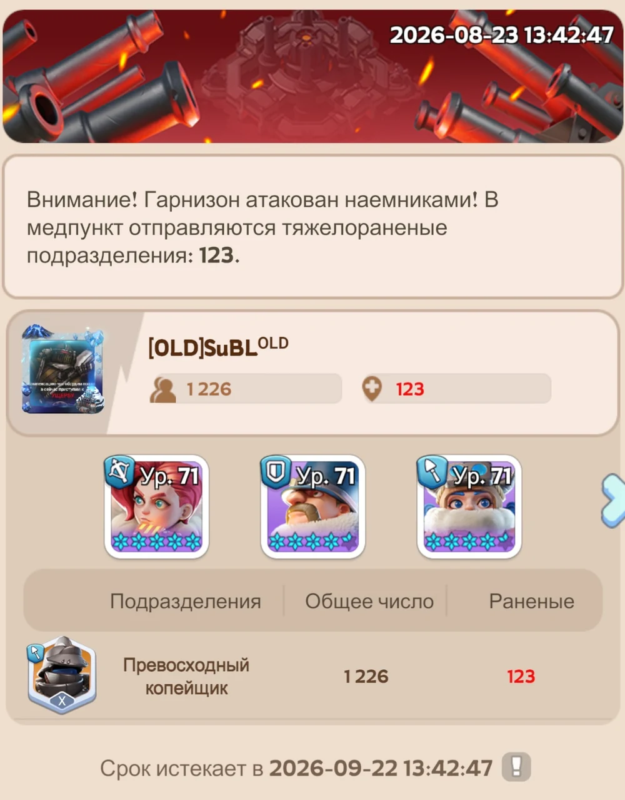
- Особенно логично использовать наёмников против центральной Литейной и других плотно забитых гарнизонов.
- Новые волны усиливаются и одновременно снижают атаку/защиту противника.
- Удар наёмников — подготовка к вашей атаке, а не замена нормальному PvP.
9. Телепорты, бой и лечение
Тратим ради смены фланга, захвата, подкрепления или выхода из фокуса. Транзит сокращает откат бесплатного продвинутого телепорта на 50%.
Используем, когда несколько секунд реально меняют захват или успеваем закрыть гарнизон перед ударом.
Войска на Литейной не погибают окончательно и восстанавливаются после события. Большие траты ускорений лечения — командное решение, а не автоматическая обязанность.
Потеряли очень много войск? Можно полностью восстановиться
Если после тяжёлых боёв армия сильно просела, выйдите с поля Литейной. Сразу после выхода запускается таймер на 12 минут: пока он идёт, игра не пустит вас обратно. После окончания таймера заходите на Литейную снова — все войска восстановятся полностью.
10. Алгоритм матча
- На старте быстро занимаем свободные внешние объекты. Пустая цель не требует долгого ралли.
- Разделяем марши: сильные — в активный PvP, остальные — в лучшие доступные гарнизоны для пассивного дохода.
- Для личного пассива: Литейная → Прототипы → Ремонтники → служебные объекты.
- Свободный марш отправляем в Оружейную мастерскую, если он не нужен на более выгодном или критическом объекте.
- Склад, Котельную, Транзит и Наёмников оцениваем по влиянию на команду, а не по их 120 личным/мин.
- Наёмниками размягчаем плотный гарнизон перед собственной атакой или ралли.
- После смены владельца проверяем припасы Арсенала вокруг объекта и сразу подбираем их.
- После захвата не оставляем атакующие первые навыки в защите: сразу меняем первых героев присоединения на защитных.
- Телепорты, лечение и ускорения тратим там, где они реально меняют результат матча.